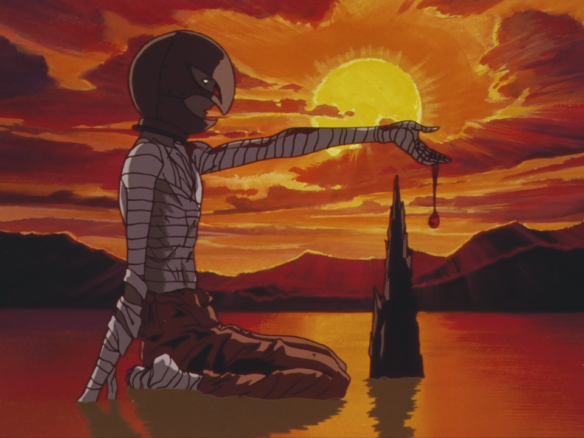

Griffith is originally the founding leader of the mercenary unit known as the Band of the Hawk, both the group and his title "White Hawk" named for his helmet forged in the shape of a Hawk's head. Extraordinarily charismatic, intelligent, handsome, and ambitious, Griffith's skill with his sabre and tactics gave him and his band a reputation of invincibility, making him the favored choice of the Midland King, who was locked in a century long war with the Empire of Tudor.
The only two people Griffith truly trusted were Guts and Casca, who were his confidants in private moments. There are several hints in the series that Griffith has feelings for Guts, expressing an obsessive want for the swordsman's strength as he bested him in a duel to force his servitude. When the Hundred Year War ended, Griffith learned of Guts's intention to leave the Band of the Hawk and resolves to kill his friend if he cannot keep him by his side. But Guts instantly defeats Griffith in their second duel by breaking his sabre, leaving Griffith in disbelief with his morale crushed. Later that night, Griffith coldly seduces Princess Charlotte and is later discovered, leading to his imprisonment and torture by the Midland King who labels his group wanted criminals.
"Men live and die by their dreams. But long after they have been abandoned they still smolder deep in men’s hearts. Some see nothing more than life and death. They are dead, for they have no dreams."A year later, now a broken and hateful shell of his former self, Griffith is rescued by Casca, Guts, Judeau, and Pippin. After Wyald's attack and the further realization of his current state from a year of crippling torture, Griffith triggered the Crimson Behelit in an act of desperation. Griffith and the Hawks are drawn into an Interstice known as the Nexus where the God Hand offer him a position among them if he sacrifices his followers to the apostles that have gathered for the Eclipse. With Ubik's powers convincing him that a few more deaths will not matter as long as he fulfills his dream, Griffith agrees to the God Hand's terms and transcends into an incorporeal demon in dark hawk armor with cape-like wings. Rechristened Femto (フェムト), no longer bound by human ties and seeing the destiny laid before him by the Idea of Evil, Griffith rapes Casca as an act of malevolence towards Guts with his seed mutating her unborn child as part of a grand design to regain corporeal form in the physical world.
Griffith
Two years later, Griffith is brought back to the physical plane after The Egg of the Perfect World orchestrated the millennial Incarnation Ceremony at Albion, using the body of Casca's malformed child as a vessel with the gift of supernatural charisma in addition to other unknown abilities that include him disappearing during the night of a full moon. Griffith creates a new Band of the Hawk composed of Apostles and humans that are drawn to him as the original Hawks were, making himself the sole military leader of Midland's armies. Griffith also wins the loyalty of the Holy See, with its pontiff regarding him as the Hawk of Light incarnate and willing to oversee his marriage to Charlotte. After leading the defeat of the Kushan Empire, using Ganishka's death to establish a worldwide interstice, Griffith establishes the city of Falconia as both a haven for remaining humans and as capital of a new Midland Empire. Despite Falconia's utopian appearance, it has a strong totalitarian undercurrents from Griffith establishing himself as the unquestionable ruler of Midland with any detractors either executed by the Holy See on heresy charges or being secretly murdered by Rakshas.
As Femto, Griffith is capable of flight via his wings and, like other members of the God Hand, can manipulate matter and distort space.
